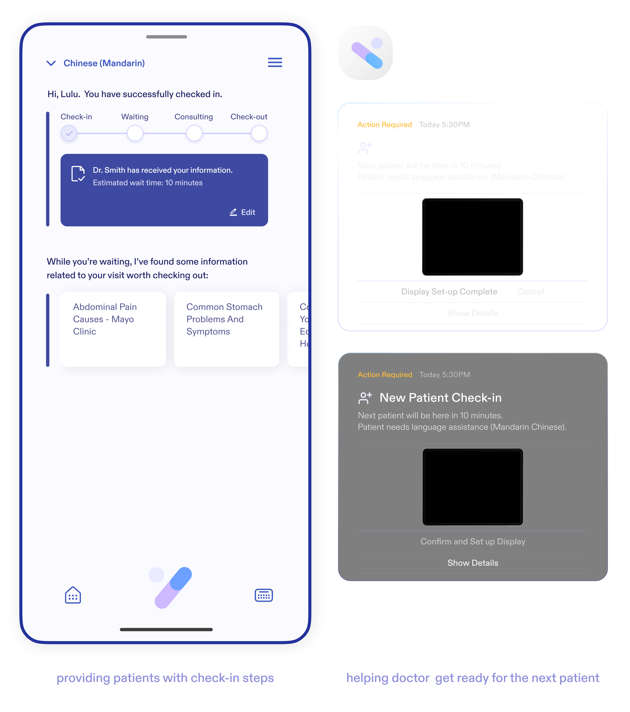
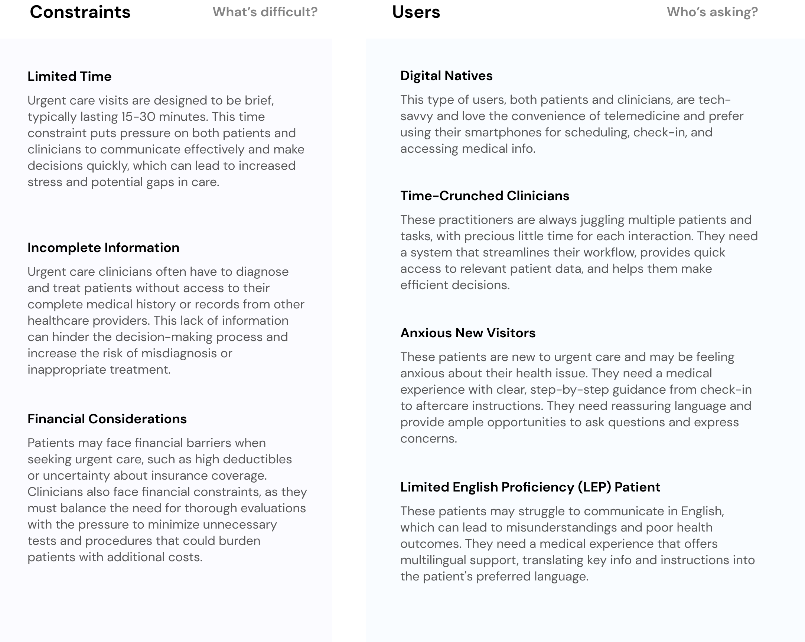
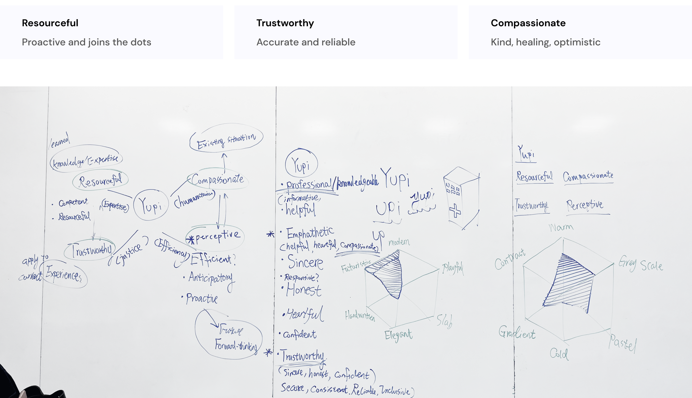
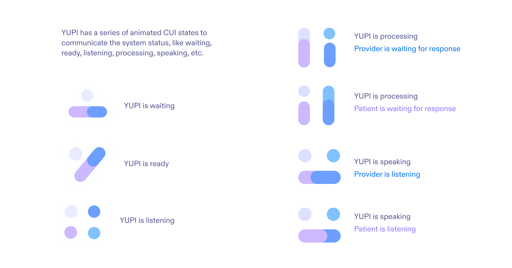

内容导航
2个月(2024年春季)
概念原型
交互设计
UI设计
为各利益相关方简化医疗保健服务
顾问:Auldyn Matthews， Sinan Goral
团队: 杨晏清， 尚靖迪

概述
一种能传达信息的智能AI代理
YUPI是 一个AI（Arificial Intelligence，人工智能）驱动的平台， 可改善医疗通信，增强患者和医生在紧急护理方面的体验。YUPI的主要目标是提高患者与医生之间互动的可及性和透明度。它具有实时医疗翻译、用于说明医疗状况的3D显示功能，并利用自然语言处理来简化预约安排和沟通。它的综合系统包括 智能徽章、移动应用程序和诊室显示器， 确保患者可随时获得所需的信息和支持。
角色
概念开发/交互设计
作为一个3人团队的成员，我的角色涵盖了从构思到设计:
-
构思: 与团队合作，利用AI、物联网和智能材料构思创新解决方案，以增强医疗通信。研究了紧急护理的痛点和改进机会。
-
概念原型: 使用Figma开发展示YUPI关键功能的交互式原型。
-
交互设计: 设计了YUPI各个触点的用户流程，包括智能徽章、移动应用程序和诊室显示器。
-
用户界面设计: 为YUPI的界面创建了视觉吸引且包容性强的UI设计，整合了3D显示、自然语言处理和辅助功能，以满足不同用户的需求和能力。
1. YUPI，您的紧急护理个人界面
YUPI是一个对话形式的AI代理（Conversational Agent），专为美国的紧急护理（Urgent Care）访问而设计，可以用用户的语言向用户传达关键信息。
预约
YUPI帮助用户以自己的母语获取附近紧急护理信息并预约。
及时准备
YUPI会提前通知临床医生患者的病情，以确保患者可能需要的及时援助。
入院登记
YUPI通过提供后续步骤和传达等候时间，帮助患者在紧急护理环境中导航。
口译
在患者和医生偏好不同语言的情况下，YUPI提供实时口译服务，以促进沟通。
3D视觉辅助
YUPI板提供3D视觉辅助，以便于医生在解释症状、处方或治疗计划时使用。

后续随访
YUPI记录就诊期间的关键信息，方便患者日后参考。
概念视频
2. 为什么选择紧急护理
我们的任务是通过利用新技术(包括会话代理和智能材料)来增强公共场所的可及性，使这些区域对每个人(无论其能力如何)都更加包容和用户友好。
当前就医体验调研
我们参观了匹兹堡最受欢迎的紧急护理诊所，包括CVS的MinuteClinic、Concentra紧急护理中心、Medexpress紧急护理中心和UPMC紧急护理中心。
信息导航困难
所有临床医生都非常忙碌。我们不得不长时间排队等候，然后才能与他们交谈以获取有关治疗过程的更多信息。
支持有限且等待时间长
当我走进紧急护理设施时，我无法克制地感到一阵不安。等候室里到处都是喧嚷的人声，椅子看起来也过时了。我坐在一张不太舒服的椅子上，试图分散注意力，不去理会房间每个角落传来的噪音。我注意到了在UPMC Shadyside，那里似乎是唯一配备这种技术的诊所，但它的自助服务终端却无人问津。
分钟一分钟过去，我发现自己越来越坐立不安。等待的不确定性几乎和我坐着的椅子一样让人难受。最后，轮到我了，一名工作人员将我领进了医生办公室。但即便如此，也没有人告诉我还要等多久医生才会来。当医生终于到来时，我很快就发现自己无法理解他所问的问题。医学术语和技术词汇对我来说就像是另一种外语，作为一个以英语为第二语言的人，这只会加重我的困惑和沮丧。

绘制痛点
我们都回忆起自己或从他人那里听到的许多去紧急护理时的挫折时刻。我们绘制了这些痛点，帮助我们专注于值得解决且在技术上可行的问题(问题空间)。
推测会话代理将如何改善这些情况
根据绘制痛点的见解，我们可以确定YUPI将提供哪些功能，以及患者和临床医生在整个紧急就诊过程中将如何与YUPI互动以使用这些功能。

3. 构思:从面罩到机器人再到生态系统
我们的设计旅程始于智能口罩，通过翻译和语音放大来增强患者与医生之间的沟通。然而，用户反馈显示，这存在可及性问题、卫生顾虑以及与口罩使用相关的政治复杂性。这些挑战促使我们改变方向。
接下来，我们探索了机器人技术来彻底改革医疗保健互动。自主机器人可以协助导航、提供信息和翻译服务。但由于高昂的成本，以及患者强调在医疗保健中人际交流的重要性，我们不得不重新考虑。用户访谈的见解揭示了医疗保健的这一关键方面:人性化的关怀。一位患者有见地地说道:"与真人交谈而非机器人是令人安心的，尤其是在你担心自己的健康状况时。"这种观点广为人知，提醒我们技术应该增强而非取代医疗保健中的人性元素。
关键的用户反馈促使我们最终转向YUPI生态系统。YUPI整合了智能徽章、移动应用程序和诊所系统，确保在每个互动点都能实现可及性、卫生和宝贵的人性化关怀。这一过程彰显了在创建有意义的医疗保健解决方案时以用户为中心设计的重要性。
4. 原型设计:为YUPI设计界面
定义身份
字体和色彩搭配
ABC Diatype的圆润边缘为YUPI的设计带来了现代和友好的感觉。这种字体笔画清晰、自信的风格确保了清晰度和易读性，而在整个界面中的使用则创造了一种连贯和对话式的基调。ABC Diatype在徽标、标题和突出区域的主导使用，树立了强大的品牌形象，体现了YUPI为用户提供舒适且富有吸引力的体验的承诺。

将YUPI整合到UI中
CUI状态
移动UI

桌面UI
智能显示器UI

5. 反思:YUPI超越紧急护理
无障碍体验
YUPI的使命是确保每个人都能更自主地导航医疗保健环境。展望未来，YUPI徽章可能会引入计算机视觉技术来解释手语。
要使YUPI成为一种可扩展的、在现有医疗保健框架内通用集成的解决方案，需要YUPI能够与各种医疗保健系统无缝互动，而这是一个多年来尽管无数尝试也从未解决的问题。话虽如此，YUPI的愿景是创建一个每位患者都能感受到被理解、重视和悉心照料的医疗保健环境，无论他们的能力如何，我们相信只要付出时间和努力，这一点是可以实现的。

营销策略
在营销材料中使用"YUPI"时，应强调关键特性，如24/7可用性、快速响应时间和准确信息。鼓励与YUPI进行自然语言互动也很重要，着重介绍YUPI能有效理解和回应用户的能力。

经验总结
设计对话
在为YUPI创建对话时，我们必须考虑语言细微差别、文化敏感性和技术准确性，确保YUPI能够与来自不同背景的用户进行有效沟通。这凸显了将AI能力与类人亲和力相结合的需求，以使医疗保健信息更加易于接受。
演示并传递想法
通过开发YUPI，我们学习了诸如先演示以建立背景等宝贵技能，以呈现和倡导我们的想法。有必要在严格的期限内向利益相关方推销我们的设计、整合他们的反馈并对设计进行迭代，这让我们意识到在沟通中清晰度和说服力的重要性，以及软实力和软件技能的重要性。
为所有能力设计
从参与YUPI项目中得到的一个核心经验教训是包容性设计的重要性。我们致力于确保YUPI对所有能力的个人都是可及的，这促使我们整合了语言翻译、手语识别和视觉辅助等功能。这种承诺加深了我们对无障碍问题的理解，并推动我们不断创新，确保没有任何用户在医疗保健对话中被排除在外。
与团队合作
合作开发YUPI加强了我们对跨学科团队价值的认识。尽管我们作为国际学生有着类似的背景，但每个团队成员都带来了独特的见解、资源和技能，从而丰富了整个项目。

更多作品
友达 (PlanPal)
友达 (PlanPal)是一款由AI驱动的手机应用,它集合了4位风格迥异的AI助手,通过循序渐进的指导、个性化的反馈和激励性的辅导,帮助用户设定并实现个人目标。
Bumble遇见
Bumble 遇见（Vibely）引入交互式地图，促进基于实时地理位置的时效性互动，提升用户在线交友体验并增加转化率。

链单车（BikeLink Pro）
BikeLink Pro不只是半自动驾驶电动自行车，它代表着全新的骑行体验。我基于以人为本的设计原则，设计了一系列用户界面和交互范例。

宠星球（PetSphere）
宠星球是一个充满活力的宠物社区社交平台，帮用户连接爱宠人士和靠谱服务，打造毛孩子们的专属乐园。我是Petsphere的UI设计师和全栈开发人员，负责从界面设计到功能开发的整个流程。